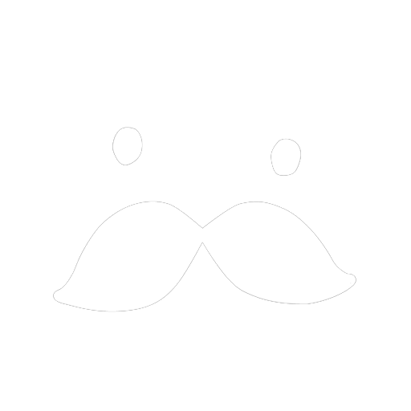

🟢 서버 실행 중

KIRA님이 업무를 준비 중입니다.
환경변수 설정
Slack Bot 환경 설정
필수 설정 - Slack 연동
Bot User OAuth Token (xoxb-로 시작)
App-Level Token (xapp-로 시작)
App Credentials의 Signing Secret
워크스페이스 Team ID
필수 설정 - 봇 정보
봇이 속한 조직 구조
쉼표로 구분
쉼표로 구분
봇의 직군과 주요 역할을 설명하세요
MCP 설정
Perplexity
DeepL
GitHub
GitLab
Microsoft 365 (Outlook/OneDrive/SharePoint)
Atlassian (Jira/Confluence)
Tableau
X (Twitter)
Clova Speech
Remote MCP 설정
커스텀 Remote MCP 서버를 추가할 수 있습니다. 각 서버는 mcp__NAME__* 형식의 도구로 사용됩니다.
Computer Use
Chrome
Playwright 자동화 시 Chrome 프로필 설정
항상 프로필 설정 열기
매번 브라우저를 열어 추가 로그인 설정
웹 서버 / 음성 수신 채널
Web Interface
능동 수신 채널 beta
Outlook
Confluence
Jira
선제적 제안 기능 beta
Dynamic Suggester
디버그
에러 시 Slack 메시지 전송
에이전트 에러 발생 시 Slack으로 알림 메시지를 전송합니다
모델 설정
AI 모델 선택
⚠️ Claude API 이슈로 현재 Haiku 모델을 선택할 수 없습니다. 관련 이슈